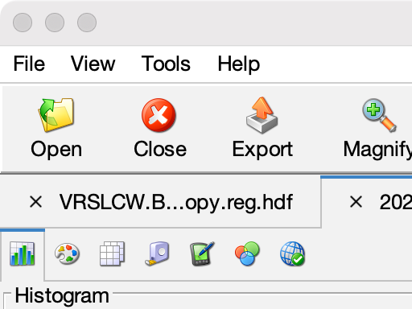

CoastWatch Data Analysis Tool Help: Data files
In this section:
Opening and closing
Open a new file using the File|Open
menu item or by clicking the Open button
on the tool bar:

Once the file has been selected, you must choose the variables
to view from the list of available variables. More than one
variable may be selected using Ctrl-click (⌘-click on the
Mac) or Shift-click. Click OK, and a
new tab is added to the file tabs and the first variable is shown
in the data view. An open file may be closed by clicking the
file tab and selecting File|Close from
the menu or by clicking Close on the
tool bar.
File information
Once open, a variety of file information may be displayed
using the Tools|File Information menu
item. Details include the satellite and sensor (or data source),
date and time, projection information, spheroid, data origin,
file format, variable names and attributes, and earth location
boundary data.
Supported file formats
CDAT currently supports the following file formats:
- CoastWatch IMGMAP
- CoastWatch format (.cwf) files that contain AVHRR SST, cloud,
channel, angle, and graphics data. These files were produced by
CoastWatch up to 2004.
- CoastWatch HDF and netCDF
- HDF 4 and netCDF 3 with CoastWatch HDF or CF metadata (.hdf,
.nc). CF metadata support is still experimental.
- SeaSpace HDF
- SeaSpace TeraScan files that have been converted to HDF using
tdftohdf. Only the rectangular, polarstereo, mercator,
and emercator projections are supported,
along with sensor_scan if latitude and
longitude angles have been included in the file.
- NOAA 1b
- NOAA 1b AVHRR data, format versions 1 through 5, GAC or LAC
resolutions, 8-bit, 10-bit, and 16-bit sensor word sizes with or
without archive header.
- OPeNDAP
- OPeNDAP datasets with CoastWatch HDF or CF metadata, map
projection files only. CF metadata support is still experimental.
Swath datasets and RasterPixelIsPoint
mode are not supported.
Back to overview